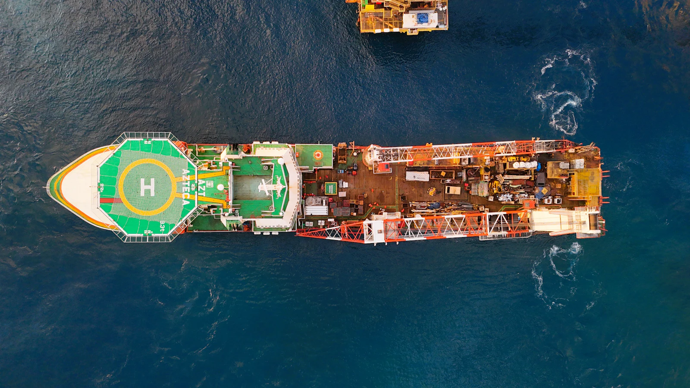
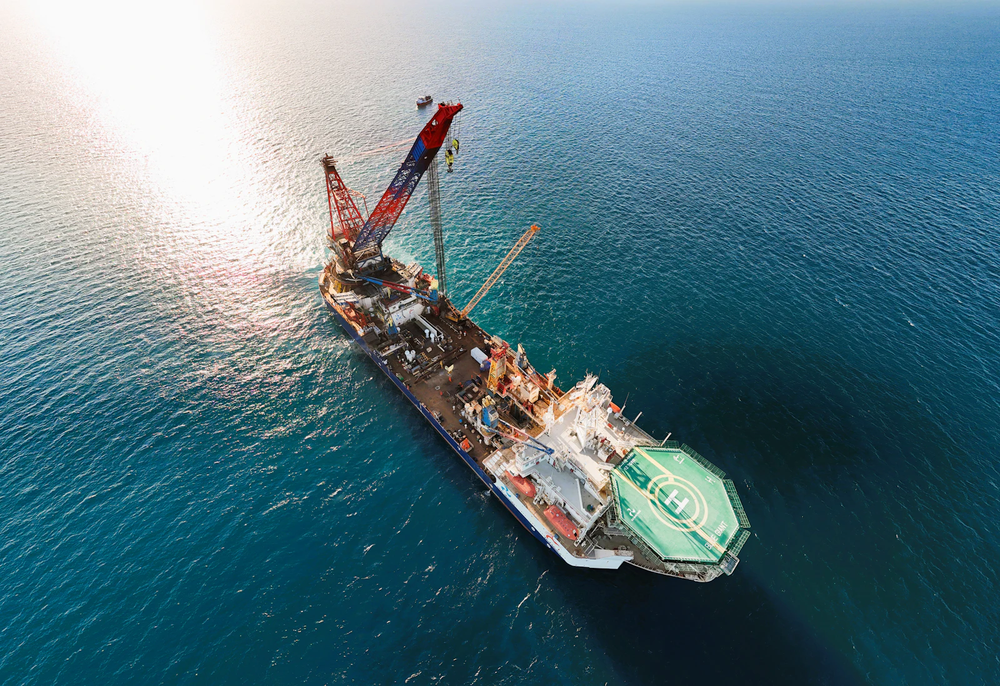

Marine Operations · Digital Compliance · Business Systems
Pacific Maritime Equipment Compliance System
Bringing equipment compliance records into one structured digital system, so staff can access the documentation behind every item they work with.
01Overview
A digital system developed to support equipment compliance management and documentation visibility, designed, built and deployed for day-to-day operational use.
02Business context
In marine and offshore operations, equipment must be backed by current, verifiable compliance documentation. The people who prepare, inspect, rent out and deploy that equipment all need to be able to find and trust this information.
Compliance is therefore not only a regulatory matter. It is an operational one. When documentation is hard to locate, routine questions about an item's status take longer than they should.
03Operational challenge
Compliance information is only useful if it is organized, consistent and accessible. Across dozens of equipment items, keeping records structured and making them available to the right staff requires a system, not just a set of files.
04Opportunity identified
Digitize compliance record management around each equipment item, so documentation and compliance information become visible to the staff who rely on them.

05Solution approach
The system is organized around the equipment itself: each item has a structured record, its compliance documentation is attached to that record, and staff can look up what they need directly.
- Equipment register52 equipment items held as structured records
- Structured documentationCompliance documents organized per item
- Digital record managementCompliance records maintained in one system
- Staff accessEquipment compliance information available to staff
06System capabilities
- Coverage of 52 equipment items
- Structured equipment documentation
- Digitized compliance record management
- Staff access to equipment compliance information
- Deployed for operational use
- Validated in day-to-day operations
07My role
I owned the work end to end, starting with how the business manages equipment compliance, and finishing with a system validated in real operations.
- Business process understandingHow compliance is managed in practice
- Requirements analysisWhat staff need to see and maintain
- Solution designRecords, structure and access
- DevelopmentBuilding the system
- DeploymentPutting it into operational use
- Operational validationConfirming it works for the people using it
08Business value
Compliance information that is organized, consistent and available when staff need it, instead of depending on manual searches.
This case study describes the system's purpose and capabilities. No quantified performance outcomes are claimed, and confidential operational details are deliberately omitted.